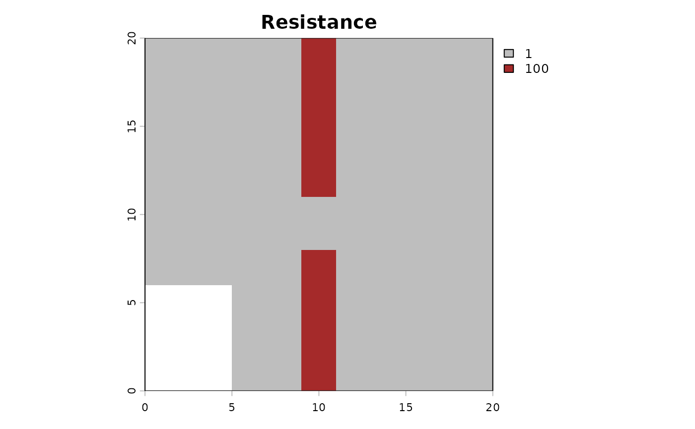

Using_External_Dispersal
Using_External_Dispersal.RmdUSE DOCKER IMAGE TO RUN THIS
In this Notebook, we are going to see how we can use an external function of dispersal. Here we show the case of using Julia Omniscape function.
About Omniscape
The Core Concept: “Everywhere to Everywhere”
Standard connectivity models usually ask: “How do I get from Point A to Point B?”
Omniscape asks: “If individuals start everywhere and try to move in all directions within their home range, where do they go? Which paths get used the most?”
It applies Circuit Theory: it treats the landscape like an electrical circuit board.
- Individuals = Electrons (Current).
- Landscape difficulty = Resistance.
The Inputs (What you give the model)
To run Omniscape, you primarily need two raster maps and one parameter.
The Source Strength (Input Raster): This is your Population Density map (number of individuals/pixel). This tells the algorithm how much current (amperes) to inject at each pixel. Example: If a pixel has a value of 100 (100 individuals), the algorithm starts a large “flow” of movement from that spot. If a pixel has a value of 0 (empty ground), no movement starts there (but movement can still pass through it).
The Resistance Surface (Input Raster): The difficulty of moving through a pixel. Arbitrary resistance unit (Ohms), usually 1 to 100. Example: Low value (1): Easy to cross (e.g., preferred habitat), the “current” flows easily here. High value (100): Hard to cross (e.g., a wall, water, road), the “current” is blocked and tries to find a way around. Infinite (NA): absolute barrier, no flow possible.
The Radius (Parameter): The dispersal distance or home range (in pixels). The maximum distance an individual is likely to travel. The algorithm solves the connectivity problem within this moving window.
The Algorithm (How it works)
The algorithm is a circular window (defined by the Radius) sliding over the landscape map.
The Outputs (What you get back)
The most important result is the Cumulative Current Map.
Cumulative Current (Output Raster): the total flow of individuals passing through a pixel, coming from all possible directions within the radius. It a Probability of movement (or Flow Intensity). Example: A high Value for a pixel is a “highway” or a “bottleneck”. A huge number of individuals pass through this spot. This could be because it’s a great habitat, or because it’s the only path between two barriers. In
spacemodRcontext: If this area is contaminated, a large portion of the population will be exposed here because they all pass through it. A low value for a pixel means that few individuals visit this spot. Either it is hard to reach (surrounded by barriers), or the population source nearby is zero.Flow Potential (Optional Output): represents how the landscape would look if resistance was 1 everywhere (perfectly flat). It shows what the flow would be based only on the population density and geometry, ignoring the landscape barriers.
Normalized Current (Optional Output): represents the
Cumulative Current / Flow Potential. This highlights “pinch points.”:>1flow is higher than expected, the landscape is funneling individuals here (bottleneck effect).< 1: flow is lower than expected, the landscape is blocking movement here.
For spacemodR:
You provide the map of where the animals live (Abundance) and how hard it is to move (Resistance).
The algorithm simulates the movement of every individual in every direction.
You get a map showing where the animals go. A pixel with high current means “many animals pass here,” making it a critical zone for contaminant exposure.
Then using spacemodR::transfer, we can compute the
exposure and diffusion of the contaminant in
population.
Initialize Julia (Required at the start of the session)
Example of habitat and resistance
# setup Matrix size
n_row <- 20
n_col <- 20
# ==============================================================================
# MATRIX of habitat (Source Strength)
# ==============================================================================
mat_habitat <- matrix(0, nrow = n_row, ncol = n_col)
mat_habitat[2:6, 2:6] <- 100
mat_habitat[15:18, 15:18] <- 20
rast_habitat <- terra::rast(mat_habitat)
names(rast_habitat) <- "population"
# ==============================================================================
# MATRICE Of RESISTANCE
# ==============================================================================
mat_resistance <- matrix(1, nrow = n_row, ncol = n_col)
mat_resistance[, 10:11] <- 100
mat_resistance[10:12, 10:11] <- 1
mat_resistance[15:20, 1:5] <- NA
rast_resistance <- terra::rast(mat_resistance)
names(rast_resistance) <- "resistance"
# VIZUALIZE
terra::plot(rast_habitat, main = "Habitat (Sources)", col = c("white", "green", "darkgreen"))

Then the code to compute the dispersal. It can be very long to compute…
## USE DOCKER IMAGE TO RUN THIS
# dispersed_map <- compute_dispersal(
# x = rast_habitat,
# method = "omniscape",
# options = list(
# resistance = rast_resistance,
# radius = 5 # small radius for this little matrix
# )
# )